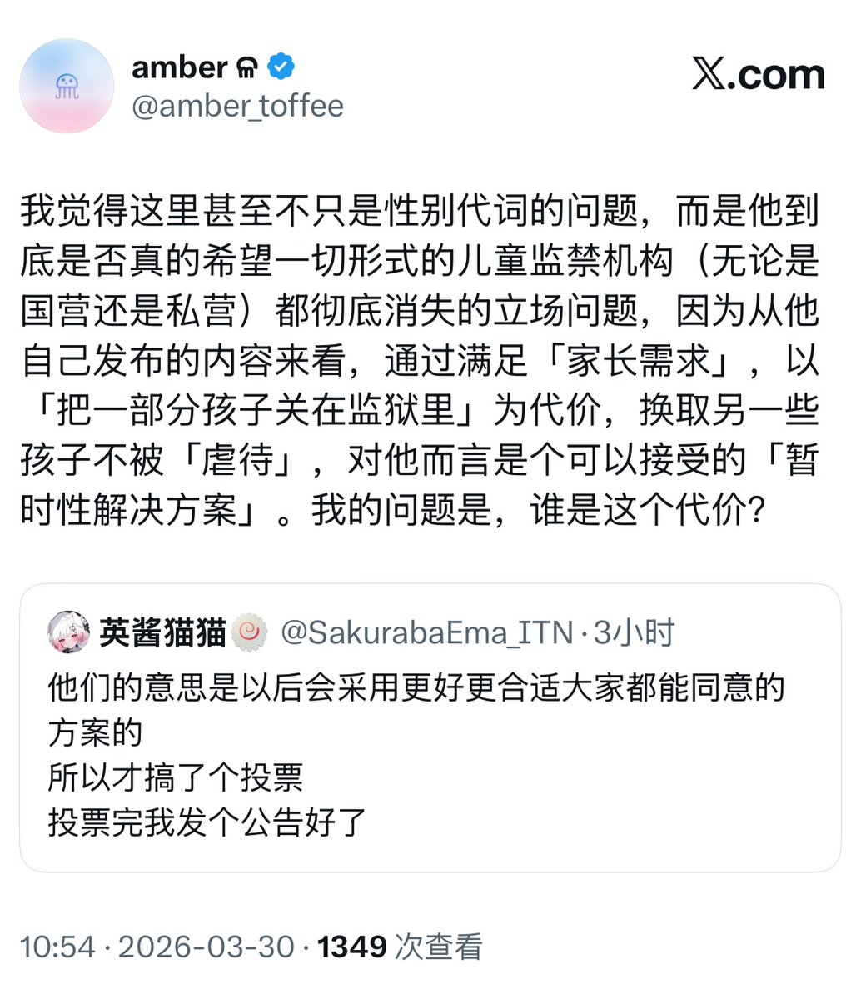
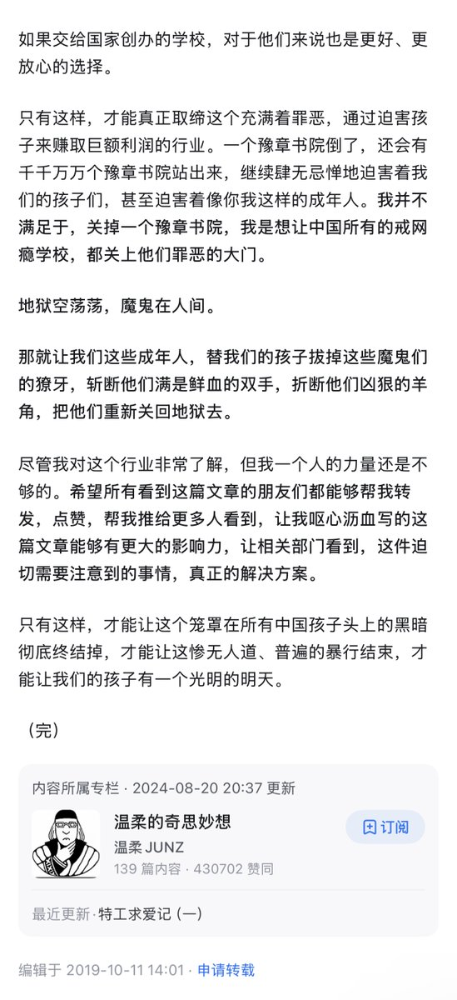
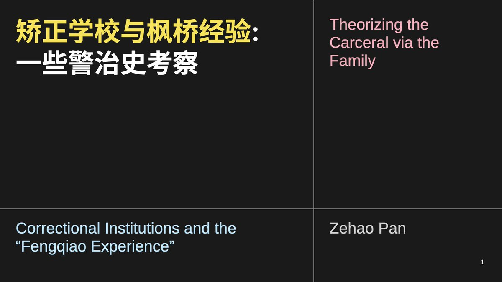
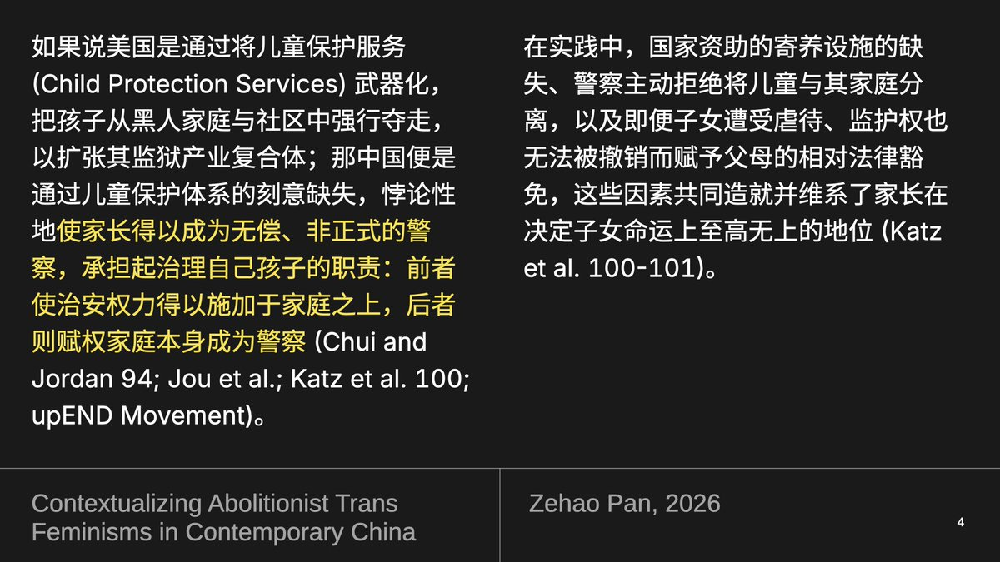

最近正好在做矫正学校方面的历史考察和会议发表，对魏老师这里的表达有些疑问和不太赞同的地方。不过首先比较有趣的便是，这种「官方化/正规化」的倾向，本来就是像温柔这样的反矫正学校志愿者曾经主动支持过的立场。所以要说救助行动如何影响了官方政策，倒是在某种很地狱的意义上也很准确就是了





的松绑，从官方的动力（国办年初发文→地方教育/行政执法对口落实专门教育/校外培训治理工作要求）上来看，其实很明确地在更长时段的视角下是从近两三年开始提上教育/司法日程的未成年犯罪防治的一环。反扭转活动者的持续行动当然是起到积极作用的，但决定性的因素仍然是暴力机器把“未成年人不良行为”